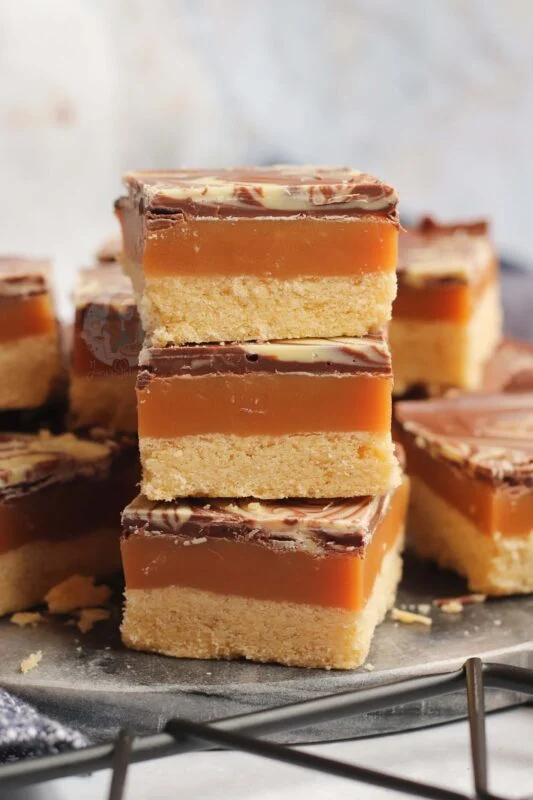

Caramel Squares

Description
A complete 'how-to' guide on how to make caramel squares! A homemade shortbread base, homemade caramel filling, and a chocolate topping.
This will keep in an airtight container for at least 1 week – if they last that long!
Ingredients
Shortbread Ingredients
- 200 g unsalted butter
- 100 g caster sugar
- 300 g plain flour
Caramel Ingredients
- 200 g unsalted butter
- 3 tbsp caster sugar
- 4 tbsp golden syrup
- 397 g condensed milk
Decoration
- 200 g milk chocolate
- 100 g white chocolate
Steps
- Preheat your oven to 180ºc/160ºc fan, and line a 9x9inch deep square tin with parchment paper.
- Cream together the sugar and butter in a stand mixer with the paddle attachment until smooth – mix in the flour until a dough is formed. It will be crumbly but the ingredients will be evenly dispersed!
- Firmly press the mixture into the bottom of tin and bake in the oven for 20-25 minutes until pale golden on top!
- Once baked, remove from the oven and leave to the side. In a large saucepan pour the condensed milk, butter, sugar, and golden syrup and melt on a medium heat until the sugar has dissolved – stir frequently to stop anything from catching.
- Once the sugar has dissolved, turn the heat up high and let the mixture come to boiling point and boil for 5-7 minutes stiring constantly so that the mixture doesn’t catch. BE CAREFUL as the mixture is VERY hot and can burn you if it splashes back!
- The mixture will be ready when it has changed to a slightly darker golden colour, and has thickened to a soft fudge texture!
- Pour the caramel onto the shortbread base and leave to set for an hour in the fridge.
- Once set, melt the milk chocolate and pour over the caramel – melt the white chocolate and pour over too - swirl it into the milk chocolate with the end of a cake skewer so it forms a pretty pattern.
- Chill the shortbread back in the fridge for another 1-2 hours until the chocolate has set!
- Chop your shortbread into the separate pieces and enjoy!
Home